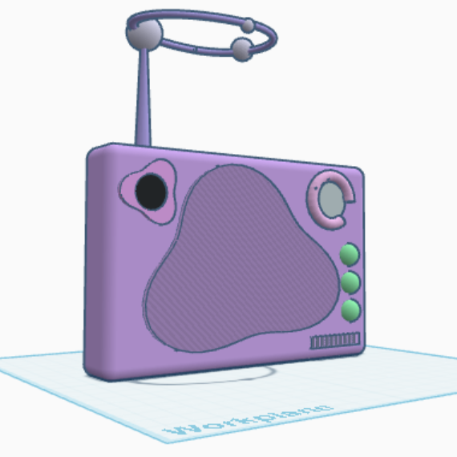
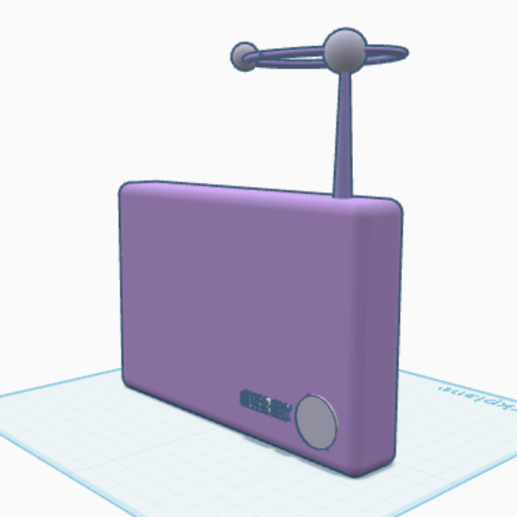
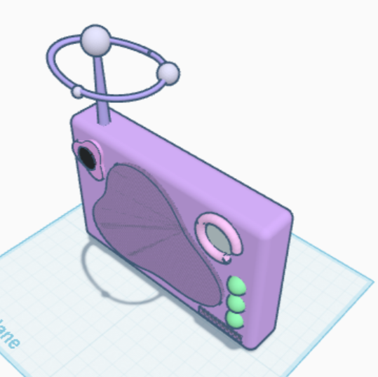
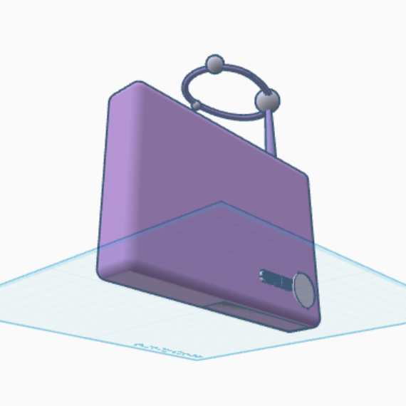

Silver Net Radio
What Does This Radio Do?
It analyses physical, mental and emotional status of the elderly patient. If there are physical issues, like asthma or weak joints, this device suggests activities and thing you can do to reduce the chance. If there are patients waiting for a diagonosis, the doctor doesn’t need to bring them in, they can send the diagonosis, or the patient can log in and the device can suggest good doctors based on websites and reviews. If they suffer from depression or mental issues in general, they can contact their family with voice activitation, they say, ‘Hey, call _____’ and they show if they are free or not. That way they don’t have to wait for them to visit. They can contact the family themselves. If family is not available, the device suggest activities for the patient to socialise more. It is a device that values routine, so it has a schedule for people with dementia to still be available for plans and other get-togethers. To make it accessible among all elderly people, we have installed voice activitaion, so people with arthritis or joint weakness can still use it. We have made a voice for the blind, and a projecter for the deaf.
- ~ ~ ~ -
How Does This Radio Help?
This device accurately analyses their physical condition, and tests the person to detect any signs of depression, anxiety, or any kind mental illness, as well as how they are doing socially. After seeing results, the device suggests realistic activities for them to do, based on how the patient does everyday things and what they like. These activities are mostly focused on their sociality, because it is proven that the more company you have, the more your mental status improves. This can help increase elderly people’s outside time, they are half way there.
- ~ ~ ~ -
Components, Accessibility, & Experience
Silver Net Radio has tons of aspects to it that make it accessible for all people. We have installed voice activitaion, so people with arthritis or joint weakness can still use it. We have added projecters for people who can’t hear well, with either sign language or words on the screen to help them. People who can’t see good can say to installed voices, meaning that the device will talk back to them.
Now for the undigonsed people. Doctors constantly ignore elderly people because the citizens are looking in the wrong place. In our device, there is a function where you can go to a website and search for a good doctor that is available. The device can send the medical information about you for you, and add doctors’s appointments on your schedule. This way, the person can look for an answer related to any symptoms you may have.
- ~ ~ ~ -
3D Modeling
 |
 |
 |
 |
- ~ ~ ~ -
Summary
Silver Net Organisation truly belives that this device can help old people in our community. If you want to continue helpng elderly people, please promote this idea to others.
- ~ ~ ~ -